먼저 생각해 보세요.
Ich ärgere mich über dich. 여기서 über dich는 무엇을 알려 주나요?
sich ärgern은 über와 함께 써서 화가 난 까닭이나 상대를 말해요.
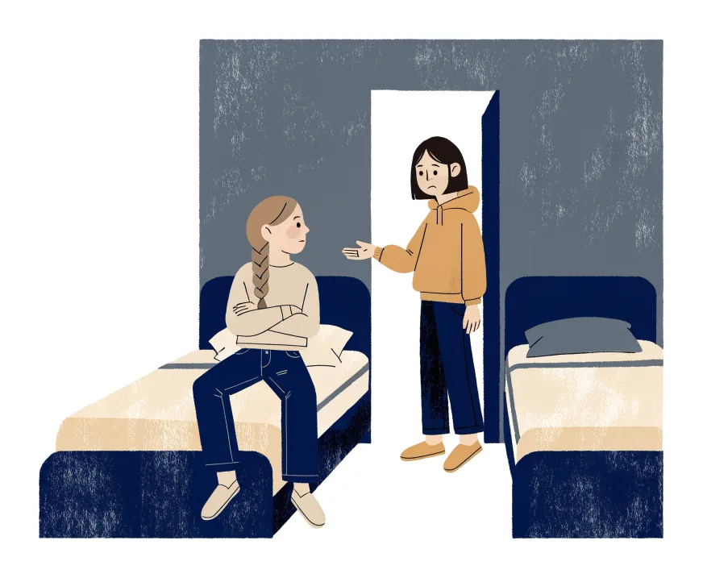
7월이에요. Emma가 어제부터 Yuna와 말을 하지 않아요. 무슨 일이 있었을까요? 두 사람이 다투고, 사과하고, 다시 사이가 좋아지는 이야기예요.
눌러서 들어 보세요.
먼저 생각해 보세요.
Ich ärgere mich über dich. 여기서 über dich는 무엇을 알려 주나요?
sich ärgern은 über와 함께 써서 화가 난 까닭이나 상대를 말해요.
Lektion 5의 낱말 다섯 개를 다시 떠올려 보세요.
문법 Verben mit Präpositionen (sich ärgern über, sich streiten mit), Worüber? Über wen?, An deiner Stelle würde ich …
이 과를 마치면 감정을 표현하고, 사과하고 화해하고, 친구의 고민에 조언할 수 있어요.
학교에서 돌아온 오후예요. Emma가 어제부터 Yuna와 말을 하지 않아요.
들으면서 찾아보세요. Emma는 왜 화가 났나요?
다음 날 쉬는 시간이에요. Yuna가 Lukas와 Elif에게 고민을 말해요. 그리고 오후에 Emma를 만나요.
들으면서 찾아보세요. Lukas는 Yuna에게 무엇을 하라고 조언하나요?
두 대화를 듣고 답하세요.
Emma는 왜 화가 났나요?
Mit wem hat Yuna über die Mathenote gesprochen?
Yuna entschuldigt sich bei Emma.
Emma ist nach der Entschuldigung sofort wieder froh.
Ich bin immer noch sauer. Ich brauche ein bisschen Zeit.
Was würde Lukas machen?
Worüber freut sich Emma immer?
대화 끝에 두 사람은 어떻게 되나요?
낱말 29개예요. 낱말이나 예문 앞의 단추를 누르면 소리가 나요. 명사는 der, die, das를 색으로 구분했어요.
das Gefühl, die Gefühle 감정, 느낌
Das ist ein schönes Gefühl.그건 기분 좋은 느낌이에요.
sich fühlen, hat sich gefühlt (기분이) ~하다, 느끼다
Ich fühle mich heute gut.나는 오늘 기분이 좋아요.
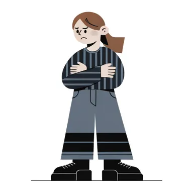
sauer 화난
Emma ist sauer.Emma는 화가 났어요.
wütend 몹시 화난
Er ist sehr wütend.그는 몹시 화가 났어요.
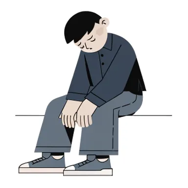
traurig 슬픈
Warum bist du traurig?왜 슬퍼해?
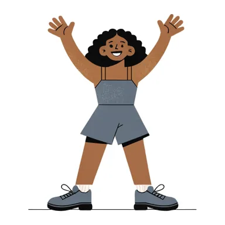
froh 기쁜, 마음이 놓인
Ich bin froh, dass du da bist.네가 있어서 기뻐.
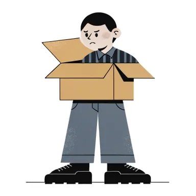
enttäuscht 실망한
Ich bin enttäuscht von dir.나는 너한테 실망했어.
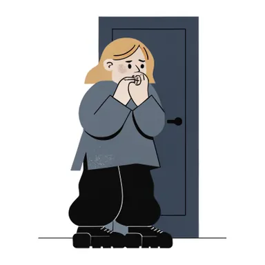
nervös 초조한, 떨리는
Vor dem Test bin ich nervös.시험 전에 나는 떨려요.
Angst haben 무서워하다, 걱정하다
Ich habe Angst vor dem Test.나는 시험이 걱정돼요.
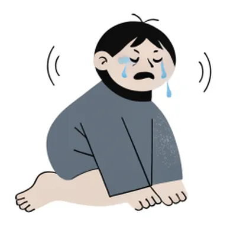
weinen, hat geweint 울다
Das Kind weint.아이가 울어요.
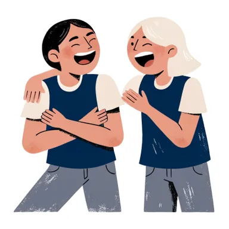
lachen, hat gelacht 웃다
Wir lachen viel zusammen.우리는 함께 많이 웃어요.
der Streit 다툼, 싸움
Ich mag keinen Streit.나는 다투는 게 싫어요.
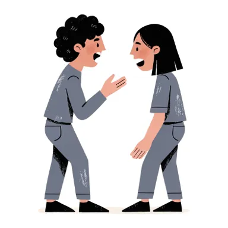
sich streiten, hat sich gestritten 다투다
Emma und Yuna streiten sich.Emma와 Yuna가 다퉈요.
sich ärgern, hat sich geärgert 화나다, 짜증 나다
Ich ärgere mich über den Bus.나는 버스 때문에 짜증이 나요.
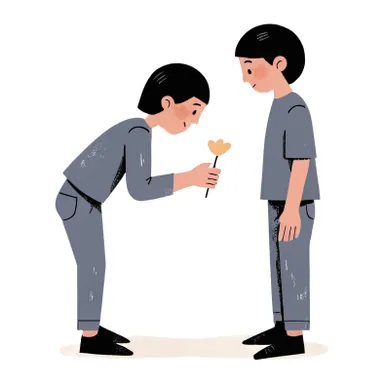
sich entschuldigen, hat sich entschuldigt 사과하다
Ich entschuldige mich bei dir.너한테 사과할게.
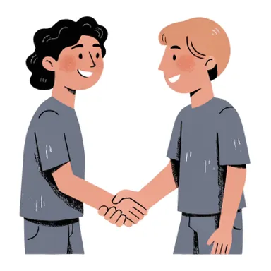
sich vertragen (du verträgst dich, er verträgt sich) 화해하다, 사이좋게 지내다
Wir vertragen uns wieder.우리는 다시 사이좋게 지내요.
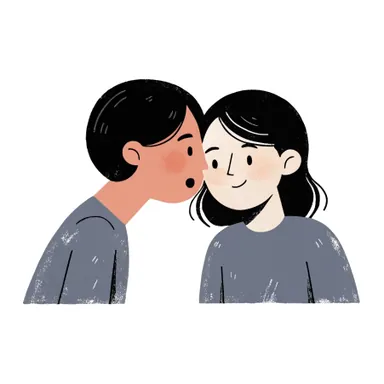
das Geheimnis, die Geheimnisse 비밀
Das ist ein Geheimnis.그건 비밀이에요.
schuld sein 잘못이 있다, 탓이다
Ich bin schuld.내 잘못이에요.
recht haben 옳다, 맞다
Du hast recht.네 말이 맞아.
das Problem, die Probleme 문제, 고민
Ich habe ein Problem.나한테 고민이 있어요.
dumm 어리석은, 바보 같은
Das war dumm von mir.내가 바보 같았어요.
denken, hat gedacht 생각하다
Ich denke oft an dich.나는 네 생각을 자주 해.
nachdenken, hat nachgedacht 곰곰이 생각하다
Ich muss nachdenken.나는 곰곰이 생각해 봐야 해요.
der Brief, die Briefe 편지
Ich schreibe dir einen Brief.너한테 편지를 쓸게.
der Rat 조언
Ich brauche deinen Rat.네 조언이 필요해.
An deiner Stelle … 내가 너라면 …
An deiner Stelle würde ich warten.내가 너라면 기다리겠어.
Worüber? 무엇에 대해?, 무엇 때문에?
Worüber sprecht ihr?너희 무슨 얘기 해?
immer noch 아직도, 여전히
Ich bin immer noch müde.나는 아직도 피곤해요.
nie wieder 다시는 ~하지 않다
Das mache ich nie wieder.다시는 그러지 않을게요.
이 과의 낱말로 여덟 문제를 풀어요.
예문을 보고 답해 보세요.
sich ärgern과 짝을 이루는 전치사는 무엇인가요?
규칙
어떤 동사는 정해진 전치사와 짝을 이뤄요. 전치사마다 뒤에 오는 격이 정해져 있어요. 동사를 외울 때 전치사와 격까지 한 덩어리로 외워요.
| 동사 | 전치사 + 격 | 예문 |
|---|---|---|
| sich ärgern | über + 4격 | Ich ärgere mich über den Test. |
| sich freuen | über + 4격 | Emma freut sich über das Eis. |
| sprechen | über + 4격 | Wir sprechen über das Problem. |
| denken | an + 4격 | Ich denke an meine Familie. |
| warten | auf + 4격 | Ich warte auf den Bus. |
| sich streiten | mit + 3격 | Ich streite mich mit meinem Bruder. |
| sich entschuldigen | bei + 3격 | Ich entschuldige mich bei dir. |
주의 sich freuen auf는 앞으로 올 일을 기다릴 때, sich freuen über는 이미 받았거나 일어난 일이 기쁠 때 써요. Ich freue mich auf die Ferien. Ich freue mich über das Geschenk.
예문을 보고 답해 보세요.
일이나 물건을 물을 때는 어떻게 묻나요?
규칙
전치사와 짝을 이루는 동사로 물을 때, 일이나 물건은 wo와 전치사를 붙여서 물어요. 전치사가 모음으로 시작하면 사이에 r를 넣어요. 사람은 전치사 뒤에 wen(4격)이나 wem(3격)을 써서 물어요.
| 동사 | 일, 물건 | 사람 |
|---|---|---|
| sich ärgern über | Worüber? | Über wen? |
| denken an | Woran? | An wen? |
| warten auf | Worauf? | Auf wen? |
| fahren mit | Womit? | Mit wem? |
주의 답할 때도 전치사를 꼭 붙여요. Worauf wartest du? – Auf den Bus. Auf wen wartest du? – Auf Emma. mit처럼 자음으로 시작하는 전치사는 r 없이 붙여요. Womit fährst du? – Mit dem Bus.
예문을 보고 답해 보세요.
An deiner Stelle 바로 뒤에는 무엇이 오나요?
규칙
An deiner Stelle würde ich …는 '내가 너라면 ~하겠어'라는 뜻이에요. 친구의 고민에 조언할 때 써요. An deiner Stelle가 첫 자리에 오면 würde가 바로 뒤에 오고, 다른 동사는 원형으로 맨 끝에 와요.
| 첫 자리 | würde | 나머지 | 원형 |
|---|---|---|---|
| An deiner Stelle | würde | ich mit ihr | sprechen. |
| An deiner Stelle | würde | ich mich | entschuldigen. |
| Ich | würde | ihr einen Brief | schreiben. |
| Ich | würde | nicht mehr | warten. |
주의 Du solltest …도 조언하는 말이에요. An deiner Stelle würde ich …는 내 일처럼 생각하고 말하기 때문에 더 부드럽게 들려요.
Elif가 Emma에게 음성 메시지를 보냈어요. 듣고 답하세요.
Nachricht für Emma
Elif Hallo Emma. Ich möchte mich bei dir entschuldigen.
Elif Yuna hat mir von deiner Note erzählt, weil sie dir helfen wollte. Und ich habe es Paul erzählt. Das war dumm.
Elif Ich ärgere mich sehr über mich. Bitte sei nicht sauer auf Yuna.
Elif Du bist gut in Mathe. Eine schlechte Note ist kein Problem.
Elif Wir könnten am Samstag zusammen für den nächsten Test lernen. Ich warte auf deine Antwort.
Warum ruft Elif an?
Wem hat Elif von der Note erzählt?
Elif ärgert sich über Yuna.
Ich ärgere mich sehr über mich.
Elif는 토요일에 무엇을 하자고 하나요?
듣고 알맞은 것을 고르세요.
Lukas는 누구 때문에 짜증이 났나요?
Ich ärgere mich über meine Schwester.
Yuna는 왜 기쁜가요?
Ich freue mich über den Brief von Mina.
Emma는 무엇을 하라고 조언하나요?
An deiner Stelle würde ich mit Frau Schneider sprechen.
무엇을 기다리고 있나요?
Worauf wartest du? – Auf den Bus.
학교 신문의 고민 상담 글이에요. 읽고 답하세요.
Frag Dr. Rat!
Lieber Dr. Rat, ich habe ein Problem. Meine beste Freundin hat eine neue Freundin. Die zwei gehen jeden Tag zusammen in die Stadt. Mich fragen sie nicht. Ich bin traurig und auch ein bisschen wütend. Was soll ich machen? Mia, 14
Liebe Mia, ich verstehe dich. Aber ärgere dich nicht zu lange. An deiner Stelle würde ich mit deiner Freundin sprechen. Sag ihr, dass du traurig bist. Vielleicht weiß sie es nicht. Du könntest auch fragen, ob ihr zu dritt etwas machen könnt. Und vergiss nicht: Man kann mehr als eine Freundin haben. Dein Dr. Rat
Was ist Mias Problem?
Wie fühlt sich Mia?
Dr. Rat sagt, dass Mia nicht mit ihrer Freundin sprechen soll.
An deiner Stelle würde ich mit deiner Freundin sprechen.
Dr. Rat는 또 무엇을 해 보라고 하나요?
Yuna가 Emma에게 쓴 편지예요. 읽고 답하세요.
Ein Brief für Emma
Liebe Emma,
ich denke seit gestern nur an unseren Streit. Ich habe mit Elif über deine Note gesprochen, weil ich dir helfen wollte. Das war falsch.
Es war dein Geheimnis. Ich verstehe, dass du sauer bist.
Ich entschuldige mich bei dir. Ich verspreche dir: Ich erzähle nie wieder ein Geheimnis.
Ich möchte, dass wir uns bald wieder vertragen. Du bist meine beste Freundin in Köln.
Deine Yuna
Woran denkt Yuna seit gestern?
Yuna findet, dass Emma nicht sauer sein darf.
Ich verstehe, dass du sauer bist.
Was verspricht Yuna?
Yuna는 무엇을 바라나요?
동사와 짝을 이루는 전치사를 고르세요.
Ich ärgere mich die schlechte Note.
Yuna entschuldigt sich Emma.
Wir warten den Bus.
Ich denke oft meine Familie in Korea.
Lukas streitet sich seiner Schwester.
Emma freut sich das Eis.
Wir sprechen das Problem.
물건을 묻는지 사람을 묻는지 보고 고르세요.
ärgerst du dich? – Über die Note.
ärgerst du dich? – Über meinen Bruder.
wartest du? – Auf den Bus.
wartest du? – Auf Emma.
hast du dich gestritten? – Mit Lukas.
denkst du? – An die Ferien.
조언하는 문장이에요. 알맞은 말을 고르세요.
An deiner Stelle ich mit ihr sprechen.
An deiner Stelle würde ich mich .
다른 동사는 원형으로 맨 끝에 와요.
Ich ihr einen Brief schreiben.
나라면 Emma한테 편지를 쓰겠어.
An deiner Stelle würde nicht so lange warten.
Was du machen?
낱말을 순서대로 눌러 문장을 만드세요.
나 너한테 화났어.
너희 뭐 때문에 다퉜어?
내가 너라면 그 애와 이야기하겠어.
너한테 사과할게.
낱말과 뜻을 짝지으세요.
듣고 그대로 써 보세요.
Ich ärgere mich über dich. 나 너한테 화났어.
Es tut mir wirklich leid. 정말 미안해.
Wir vertragen uns wieder. 우리 다시 사이좋게 지내자.
Ich bin sauer. 나 화났어.
Ich bin traurig. 나 슬퍼.
Ich ärgere mich über … 나는 ~ 때문에 화가 나.
Ich bin enttäuscht von dir. 너한테 실망했어.
Es tut mir leid. 미안해.
Ich entschuldige mich bei dir. 너한테 사과할게.
Das war dumm von mir. 내가 바보 같았어.
Das mache ich nie wieder. 다시는 그러지 않을게.
Schon gut. 됐어, 괜찮아.
Du hast recht. 네 말이 맞아.
Wir vertragen uns wieder. 우리 다시 사이좋게 지내자.
An deiner Stelle würde ich … 내가 너라면 ~하겠어.
Du könntest … ~할 수도 있잖아.
Sprich mit ihr! 그 애와 이야기해 봐!
대화 A에서 역할을 하나 고르세요. 상대의 말은 음성으로 나오고, 내 차례에는 직접 말해요.
내 기분과 그 까닭을 적으세요. 완성된 문장을 소리 내어 읽어 보세요.
Ich ärgere mich über den Regen.
Ich freue mich über ein Geschenk.
Ich denke oft an die Ferien.
Ein Rat
친구가 고민을 써서 보냈어요. 친구에게 조언하는 답장을 써 보세요. 친구의 고민: 가장 친한 친구와 다퉈서 사흘째 서로 말을 하지 않아요.
Lieber Jun, ich verstehe, dass du traurig bist. Ein Streit mit einem Freund ist nicht schön. An deiner Stelle würde ich nicht länger warten. Ich würde ihm eine Nachricht schreiben und mich entschuldigen. Du könntest ihn auch fragen, ob ihr zusammen Fußball spielen wollt. Ich glaube, dass er auch traurig ist. Bald vertragt ihr euch wieder!
다 쓴 뒤에 확인해 보세요.
Ich kann sagen, wie ich mich fühle.내 기분을 말할 수 있어요.
Ich kann mich entschuldigen und mich wieder vertragen.사과하고 화해할 수 있어요.
Ich kann einem Freund einen Rat geben.친구에게 조언할 수 있어요.